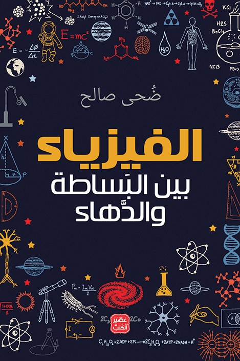

السفر عبر الزمن
هل يمكن أن يمر الزمن بسرعات مختلفة؟
مجموعة الطالبات: تولين هاني، ريم فادن، عاتكة
لماذا ندرس الفيزياء؟
منذ بداية الحضارة الإنسانية، أثبت الإنسان أنه فضولي ومحب للاستكشاف ويسعى دائمًا إلى فهم ما يحيط به. فتخيّل أن تضع أمامه كونًا شاسعًا، تحكمه قوانين تفسّر آلية عمله وتكشف أسراره؛ فمن الطبيعي أن ينجذب الإنسان إلى هذا اللغز الجميل والمعقّد ودراسته وفهمه.
وهنا تكمن متعة الفيزياء؛ فهي تمثل تحديًا لعقولنا وتدفعنا إلى طرح الأسئلة والبحث عن الإجابات، ومحاولة فهم العالم من حولنا بصورة أعمق.
أجمل ما في الفيزياءهذا اللغز قابل للفهم، والكون ليس مجرد أسرار غامضة، بل يمكننا اكتشافه.
من نيوتن إلى أينشتاين
الزمن هو البعد الرابع
في الماضي كان العلماء يعتقدون أن الكون مكوّن من ٣ أبعاد مكانية: الطول والعرض والارتفاع، وهذه الأبعاد تتفاعل مع بعضها وتسمح لنا بالتحرك في أي اتجاه.
وقال نيوتن إن الزمن يتحرك نحو المستقبل فقط، وإنه مطلق ولا يتأثر بأي شيء؛ أي أن الزمن يمر بالمعدل نفسه على الجميع.
بعد ذلك جاء أينشتاين وقال إن الزمن هو البعد الرابع، وإن المكان والزمان مرتبطان معًا فيما يُعرف بـ الزمكان.
١٩٠٥
النسبية الخاصة: السرعة تُبطئ الزمن
في عام ١٩٠٥ نشر أينشتاين نظريته النسبية الخاصة التي تنص على أن الزمن يتأثر بالسرعة، وكلما زادت السرعة يتباطأ الزمن.
مثاللنفترض أن الشخص A سافر في الفضاء بسرعة قريبة من سرعة الضوء لمدة خمس سنوات. عندما يعود إلى الأرض سيجد أن وقتًا أطول بكثير قد مر عليها، ربما أكثر من عشر سنوات، بينما هو قد عاش خمس سنوات فقط. لذا سيكون وكأنه قفز عدة سنوات إلى المستقبل.
١٩١٥
النسبية العامة: الجاذبية تُبطئ الزمن
بعد ذلك، في عام ١٩١٥، جاءت النسبية العامة، التي تحدث فيها أينشتاين عن الجاذبية.
وفقًا للنسبية العامة، الجاذبية هي نتيجة لانحناء نسيج الزمكان. فعندما نضع كتلة كبيرة مثل الشمس، فإنها تسبب انحناءً في الزمكان، وهذا الانحناء يؤثر في حركة الأجسام من حولها، وهو ما نراه ونشعر به على أنه جاذبية.

وأثبتت النسبية العامة أن الزمن يتمدد قرب الكتل الكبيرة مثل الثقوب السوداء.
هل تعلم؟ساعات أقمار نظام GPS تتقدم نحو ٣٨ ميكروثانية كل يوم مقارنة بساعات الأرض، ولو لم يصحّحها العلماء لأخطأت الخرائط بعدة كيلومترات يوميًا.
في السينما
كوبر على كوكب ميلر
وهذا ما ظهر لنا في فيلم Interstellar، عندما كان كوبر على كوكب ميلر بالقرب من الثقب الأسود، مرّ عليه عدة ساعات في الكوكب بينما في الأرض قد مرت عليهم أكثر من ٢٠ سنة.
وأخيرًا عندما عاد كوبر إلى الأرض كانت ابنته أكبر منه، فهو فعليًا كأنه سافر إلى المستقبل.
المستقبل ممكن، والماضي لا دليل عليه
وهاتان الظاهرتان علميًا مثبتتان ومجرَّبتان، وتعطينا طريقة حقيقية للسفر إلى المستقبل.
أما السفر إلى الماضي، فهو موضوع مختلف تمامًا وأكثر تعقيدًا، ولا يوجد حتى الآن دليل تجريبي على إمكانية حدوثه.
للمزيد من المعلومات
- فيديوالدكتور مصطفى محمود: اينشتين والنّسبيّة شاهد الفيديو

كتابالفيزياء بين البساطة والدهاءضحى صالح
مجموعة الطالبات: تولين هاني / ريم فادن / عاتكة
تعرّفوا على أغرب الأجسام التي تُبطئ الزمن